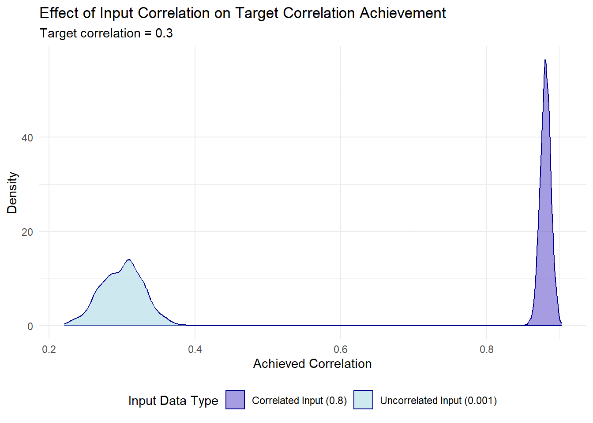

Generating Correlated Random Numbers in R from Scratch
R
Statistics
Simulation
Published
March 19, 2024
Need random data with specific correlation patterns for your simulations? This post shows you how to generate correlated random numbers in R using a simple matrix approach – perfect for testing algorithms or creating realistic synthetic datasets.
The Cholesky Method in Four Steps
# 1. Define your target correlation matrixcor_mat <-matrix(c(1, 0.3, 0.3, 1), nrow =2, byrow =TRUE)# 2. Apply Cholesky decompositionchol_mat <-chol(cor_mat)# 3. Generate uncorrelated random numbersold_random <-matrix(rnorm(2000), ncol =2)# 4. Transform to create correlationnew_random <- old_random %*% chol_mat# Verify the correlationcor(new_random)
That’s it! The new_random matrix now contains values with approximately your target correlation structure. This technique uses Cholesky decomposition to create a transformation matrix that induces the desired correlation when applied to uncorrelated data.
Watch Out for These Pitfalls
1. Start with Truly Random Data
Your input data must be uncorrelated for this method to work correctly:
# What happens with already correlated input?simulate_correlation <-function(input_correlation, target =0.3) { results <-replicate(1000, {# Create input with specified correlation x <-rnorm(1000) y <- input_correlation * x +rnorm(1000, sd =sqrt(1- input_correlation^2))# Apply our method old_random <-cbind(x, y) chol_mat <-chol(matrix(c(1, target, target, 1), ncol =2)) new_random <- old_random %*% chol_mat# Return resulting correlationcor(new_random)[1,2] })return(results)}# Compare results with different input correlationspar(mfrow =c(1, 2))hist(simulate_correlation(0.8), main ="Starting with Correlated Data",xlim =c(0, 1), col ="salmon")hist(simulate_correlation(0.001), main ="Starting with Random Data",xlim =c(0, 1), col ="lightblue")

When your input data already has correlation patterns, the Cholesky method can’t properly override them to create your target correlation.
2. Use the Same Distribution for All Variables
# Different distributions cause problemsset.seed(123)x1 <-rchisq(1000, df =3) # Chi-squared (skewed)y1 <-rnorm(1000) # Normal (symmetric)old_mixed <-cbind(x1, y1)# Same distribution works betterx2 <-rchisq(1000, df =3)y2 <-rchisq(1000, df =3)old_same <-cbind(x2, y2)# Apply the same transformation to bothchol_mat <-chol(matrix(c(1, 0.7, 0.7, 1), ncol =2))new_mixed <- old_mixed %*% chol_matnew_same <- old_same %*% chol_mat# Compare resultscat("Target correlation: 0.7\n")
cat("Transformed data range:", round(range(new_random), 2), "\n")
Transformed data range: -12.81 19.93
cat("Negative values in result:", sum(new_random <0), "out of", length(new_random))
Negative values in result: 488 out of 2000
The Cholesky transformation can fundamentally change your data’s properties - like introducing negative values into a previously positive-only distribution.
The Easy Way: Using mvtnorm
For most real applications, the mvtnorm package offers a simpler solution:
# Load the packagelibrary(mvtnorm)# Define means and covariance matrixmeans <-c(10, 20) # Mean for each variablesigma <-matrix(c(4, 2, # Covariance matrix2, 3), ncol =2)# See the implied correlationcov2cor(sigma)
# Generate correlated normal data in one stepx <-rmvnorm(n =1000, mean = means, sigma = sigma)# Verify the resultround(cor(x), 3)
[,1] [,2]
[1,] 1.000 0.613
[2,] 0.613 1.000
When to Use Each Method
Use the Cholesky method when: - You need to understand the mathematical principles - You’re working with non-normal distributions - You need to create custom correlation structures
Use mvtnorm when: - You need multivariate normal data quickly - You want precise control over means and variances - You’re working with many variables